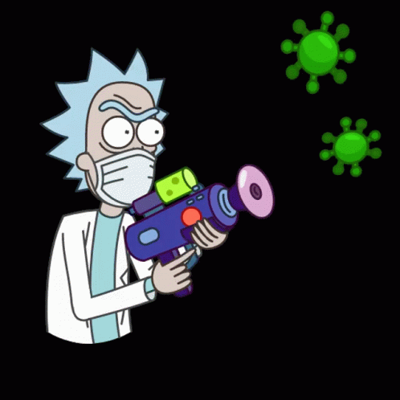

Resumo
Criada por Justin Roiland e Dan Harmon, Rick & Morty é uma série animada de comédia que mostra as
aventuras
interdimensionais de Rick, a mente mais brilhante da galáxia, e seu neto Morty.
Com sua arma capaz de criar portais para viajar no tempo-espaço, Rick leva Morty para explorar todos as
absurdas formas de vida que o universo é capaz de sustentar.
Apesar de genial, Rick tem sofre de alcoolismo e possui uma relação conflituosa com sua família, fruto
da
sua visão cínica da vida e seu egoísmo. Por outro lado, Morty está longe de ter o intelecto do seu avô,
mas
é o único capaz de fazê-lo ser um pouquinho mais gentil.
Entre momentos hilários e reflexões interessantes sobre a vida, Rick & Morty arranca gargalhadas e ainda
rende ótimas discussões filosóficas.
Rick Sanchez
Rick é um cientista gênio, capaz de criar invenções científicas complexas, incluindo
capacetes para melhorar
o cérebro, dispositivos invasores de sonhos, portais para várias dimensões diferentes, várias armas de
energia e campos de força e o primeiro parque de diversões do mundo dentro do corpo de um ser humano . Seu
brilho pode ser confundido por suas visões pessoais cansadas e suas tendências alcoólicas.
Morty Smith
Morty é um menino jovem, bem-humorado e impressionável, que pode ser facilmente manipulado.
Ele foi descrito
como 'desafiado' e tem dificuldades na escola. Ele também tem uma gagueira pronunciada. Apesar de sua
aparente falta de intelecto, Morty mostrou ser um bom ouvinte e segue bem as instruções.
Summer Smith
Summer tem alguns traços de personalidade de uma típica adolescente americana, pois deseja
ser popular entre
seus colegas e acha as travessuras de sua família disfuncionais, embora ela ainda se preocupe com elas. Ela
é muito ligada ao telefone e às redes sociais, gravando vídeos de seu cachorro Snuffles quando ele se tornou
superinteligente e estremecendo ao pensar em seu pai Jerry se juntando ao Facebook.
Beth Smith
Beth é uma mulher inteligente, ambiciosa e independente que sofre de uma variedade de
inseguranças
profundas. Uma dedicada cirurgiã veterinária de cavalos, ela é a principal fonte de renda da família e
freqüentemente tenta fazer o melhor por sua família com base neste senso de responsabilidade. Ela é
altamente insegura sobre sua profissão como cirurgiã de cavalos e é rápida em entender que ela não é uma
cirurgiã "de verdade" ou uma veterinária "de verdade".
Jerry Smith
Jerry é um homem de família leal, mas pode ser inseguro e mal orientado. Ele
frequentemente luta contra
crises de insegurança, pois é constantemente lembrado de que seu casamento está em condições difíceis, e ele
sente que Rick ameaça sua posição como patriarca da família. Mesmo que seu relacionamento com sua esposa -
Beth - seja tenso, ele ainda a ama, não importa o que aconteça, e não a abandona. Este, por sua vez, é
aparentemente também o motivo pelo qual Beth sempre escolhe Jerry no final, apesar do fato óbvio de serem
pólos opostos. Sua escassa inteligência é sua maior fraqueza (no papel), no entanto, também lhe proporciona
uma vida muito mais feliz do que o onisciente Rick. O alheio Jerry se concentra em coisas que Rick vê como
inferiores, relacionamentos e apegos.

Usem máscara